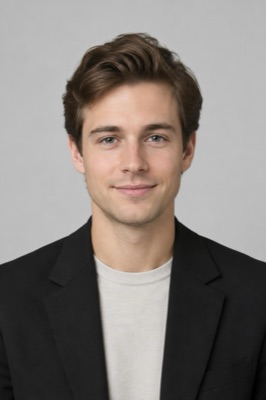

Our Approach
No shoots. No limits.
Art direction is the craft
AI is a production tool, and art direction is the craft. We began as a small art-direction practice. Every frame is storyboarded before generation, and lighting and styling references are chosen like a shoot. A person retouches each pass by hand. We use no stock-looking faces, and each brand keeps its own consistent model casting.
No photoshoots, no physical models, no studio rental.
Imagery without the shoot
FRAMELESS LAB builds realistic AI models and campaign visuals for fashion, beauty, jewelry, food and hospitality brands worldwide. No photoshoots, no physical models, no studio rental. Your finished images arrive in 5 to 7 business days, with two revision rounds included in every package.

Every image should feel photographed, never generated by a machine.